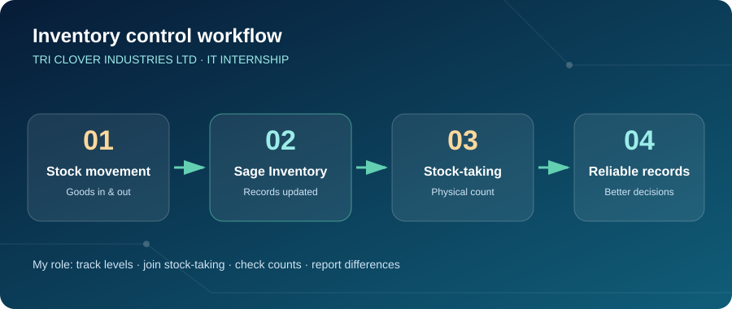

Challenge
Keeping physical stock and system records aligned so that the team could rely on inventory information day to day.
Supporting stock accuracy and day-to-day inventory operations with Sage Inventory software during my IT internship in Nairobi.

Reliable stock information is essential for smooth operations. During my internship at Tri Clover Industries Ltd, I supported the team responsible for tracking stock levels and keeping inventory records up to date.
Working with the IT and operations team, I helped maintain stock records, took part in stock-taking exercises, and used Sage Inventory software to support inventory control in a real business environment.
The work helped the team maintain more dependable stock information and gave me practical experience in business systems, data accuracy, and the way IT supports operational decisions.
A simple view of the work, what I contributed, and what I took away from it.
Keeping physical stock and system records aligned so that the team could rely on inventory information day to day.
Used Sage Inventory to track levels, joined stock-taking exercises, checked records against counts, and reported differences clearly.
Supported more reliable stock records and built hands-on experience with business systems and IT operations.